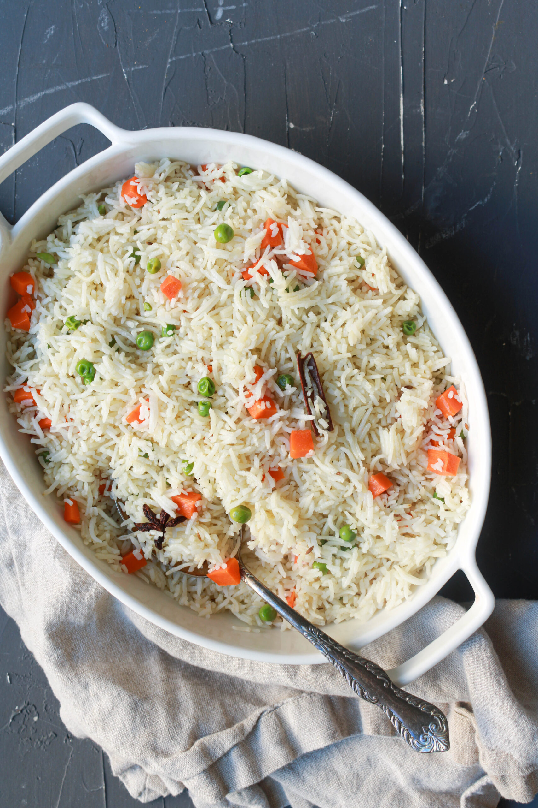

⏳ 35 mins
üçΩÔ∏è Serves: 3-4
üå∂Ô∏è Mild Spicy
ü•¶ Vegetarian
Ingredients
- 1 cup basmati rice
- 1 tbsp ghee or oil
- 1 bay leaf
- 1 cinnamon stick
- 1 clove
- 1 small onion (sliced)
- 1/4 cup peas
- 1/4 cup carrots (chopped)
- 1/2 tsp garam masala
- 2 cups water
- Salt to taste
- Fresh coriander for garnish
Steps
- Dry roast the semolina in a pan until fragrant. Set aside.
- Heat oil in a pan, add mustard and cumin seeds, and let them splutter.
- Add chilies, onions, and ginger, sauté until onions turn soft.
- Stir in the carrots and peas, cook for 2-3 minutes.
- Pour in water and bring to a boil.
- Slowly add semolina while stirring continuously to avoid lumps.
- Cook for 2-3 minutes until it thickens.
- Add lemon juice and garnish with coriander. Serve hot!
FAQs
Can I add more vegetables?
Yes! Beans, potatoes, and bell peppers work well.
How do I make it more flavorful?
Use vegetable broth instead of water.